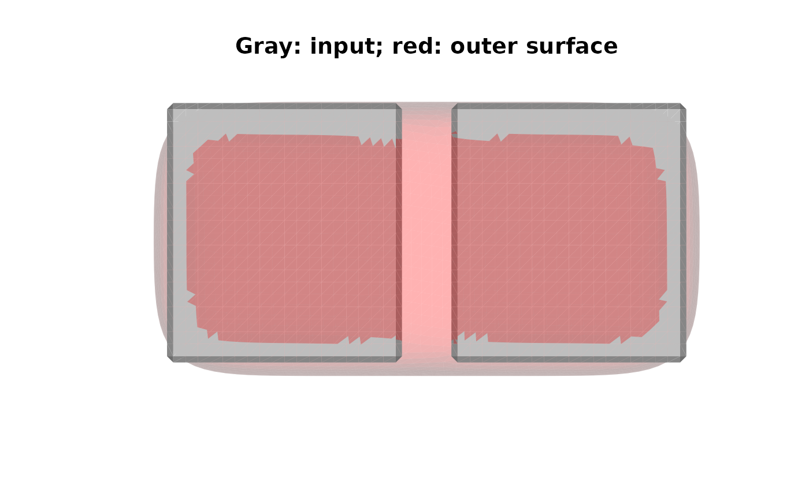

Computes the smooth surface that wraps a pial surface without
dipping into the sulci: the surface FreeSurfer writes as
?h.pial-outer-smoothed when it computes the local
gyrification index (mris_compute_lgi, run by
recon-all -localGI), re-implemented here without 'MATLAB'.
The envelope is not a convex hull. It is a morphological closing of the
volume inside the pial surface: a dilation followed by an erosion
with a disk or ball of radius close_radius, which fills every gap the
element cannot enter. The sulci, which are narrower than the
element, are bridged, while concavities broader than the element are
followed. A convex hull is the limit of an infinitely large element.
Usage
mris_outer_surface(
surface,
close_radius = 15,
smooth_iterations = 30L,
method = c("freesurfer", "isotropic"),
verbose = FALSE
)Arguments
- surface
pialsurface of one hemisphere, inFreeSurfersurface (tkrRAS) coordinates, for example read withfreesurferformats::read.fs.surface; seeensure_mesh3dfor the accepted classes. The surface must be closed, but it does not need to be free of topological defects- close_radius
radius of the closing element in millimeters; default is
15, the--close_sphere_sizedefault ofmris_compute_lgi. That script documents the value as the sphere diameter, but its code uses it as the radius; pass7.5for a 15-millimeter diameter. A value of0skips the closing- smooth_iterations
number of neighbor-averaging rounds applied to the extracted surface; default is
30, the--smooth_itersdefault ofmris_compute_lgi- method
"freesurfer"(default) to reproduce theFreeSurferoutput, or"isotropic"for a three-dimensional closing; see 'Details'- verbose
whether to print progress messages; default is
FALSE
Value
A triangular mesh of class 'mesh3d' (with vb,
it, and normals) in the coordinates of surface. Its
attribute "info" is a named list with method,
close_radius, smooth_iterations, delta (the shift of
the inside test, in millimeters), grid_origin and grid_dim
(the corner coordinates and dimension of the working lattice),
odd_columns (lattice columns that crossed surface an odd
number of times and were left empty; non-zero for open or
self-intersecting input), n_components (connected components of
the extracted surface before the largest one is kept),
is_closed_manifold (see vcg_count_edge_defects), and
euler (the Euler characteristic of the result; 2 for a
closed surface without handles).
Details
With method = "freesurfer" (default), the steps reproduce
mris_compute_lgi as it is coded:
Fill the lattice points that lie inside
surface, asmris_fill -c -r 1does. The lattice is 1 millimeter apart and aligned with integer surface coordinates (the conformed volume). The inside test is evaluated at the lattice points shifted bydelta(less than half a millimeter per axis):mris_fillfills a grid anchored at the smallest vertex coordinate and then re-samples it onto the conformed grid with nearest-neighbor interpolation.Grow the filled volume by one voxel toward the right (
+x) and superior (+z) sides only. This is what the "soft Gaussian filter" ofmake_outer_surface.m(a 2-by-2 kernel followed by a threshold) amounts to.Close the volume with a disk of radius
close_radiusmillimeters, independently in every coronal slice. The structuring elementstrel('ball', 15, 15)inmake_outer_surface.mis two-dimensional, so nothing is bridged along the anterior-posterior axis.Extract the surface of the closed 0/255 volume with marching cubes at level 100, as
isosurfacedoes inmake_outer_surface.m.Keep the largest connected component, as
mris_extract_main_componentdoes.Apply
smooth_iterationsrounds of include-self neighbor averaging, asmris_smooth -nw -n 30does (seemris_smooth).
On both hemispheres of the N27 template, every vertex of the
surfaces FreeSurfer generated lies within 0.9 millimeters of the
result (mean nearest-vertex distance 0.34 millimeters).
With method = "isotropic", the volume is closed with a
three-dimensional ball of radius close_radius instead, with no
one-sided growth, no delta shift, and marching cubes at (just below)
the midpoint level. This is the procedure the FreeSurfer
documentation describes. The result does not depend on how the head is
oriented in the volume, but it differs from the FreeSurfer output by
up to a few millimeters.
References
A surface-based approach to quantify local cortical gyrification.
IEEE Transactions on Medical Imaging, 27(2), 161-170 (2008).
Examples
# Two boxes 4 millimeters apart: the envelope bridges the gap
volume <- array(0, c(64, 40, 40))
volume[10:28, 10:30, 10:30] <- 1
volume[33:51, 10:30, 10:30] <- 1
boxes <- vcg_isosurface(volume, threshold_lb = 0.5, vox_to_ras = diag(4))
envelope <- mris_outer_surface(boxes, close_radius = 8)
attr(envelope, "info")$n_components
#> [1] 1
plot_mesh_polygon(
list(boxes, envelope),
alpha = c(1, 0.3),
col = list("gray", "red"),
main = "Gray: input; red: outer surface"
)
